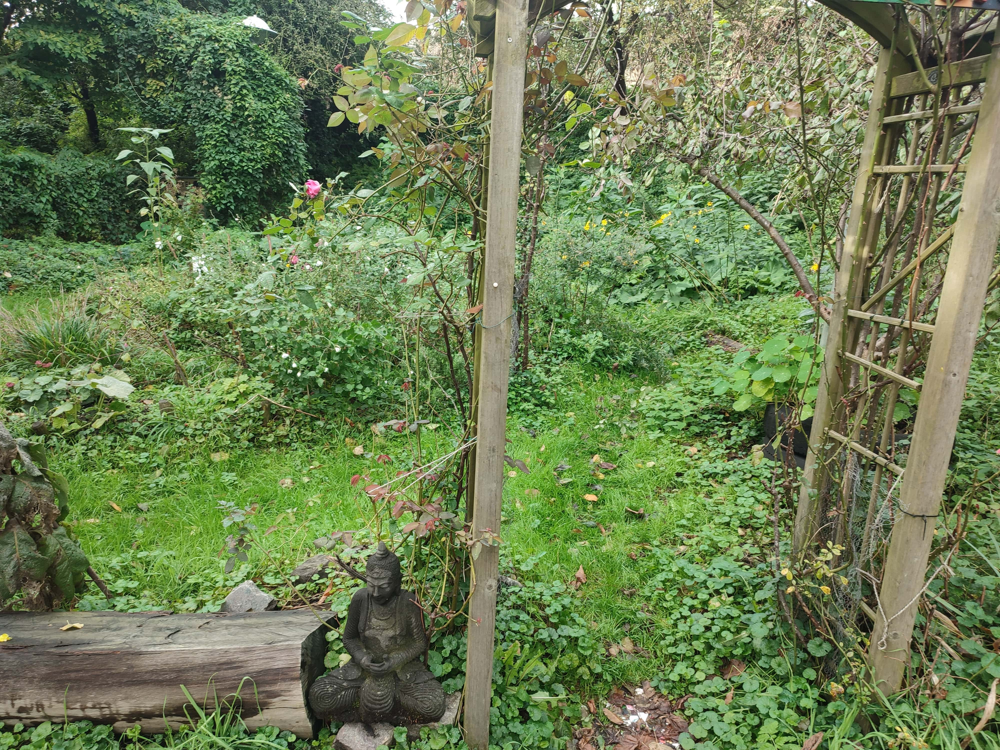

tips voor de tuin
we hebben een paar tips bedacht die je kunnen helpen bij het maken van een tuin. Deze tips kan je opdelen in 3 categorieen. klik hier om naar een specifiek onderdeel te gaan.
Weertips
bij het aanschaffen van een plant moet je goed nadenken wat voor plant je koopt. Je hebt planten die het fijner vinden om in de schaduw te staan, terwijl er ook planten zijn die vel zonlicht veel beter vinden.
bij een plant moet je goed rekening houden met de bloeiperiode waar ze gaan opbloeien. Sommige planten bloeien alleen in de lente, dus je moet niet verwachten dat ze de hele zomer nog doorgroeien

Plantentips
voordat je een plant koopt moet je hier ook over verschillende dingen nadenken. Hoeveel moeite wil jij voor je planten doen? Er zijn simpelere planten om te onderhouden, zoals een vetplant bijvoorbeeld. Maar je hebt ook ingewikkeldere planten zoals rozen.
Zoek goed op of planten elkaar versterken of elkaar verzwakken als je ze naast elkaar plant. Bijvoorbeeld een zonnenbloem neemt heel veel water Voor zichzelf op, waardoor andere planten snel kunnen verstikken.
Overige
Voordat je aan een tuin begint, kan het handig zijn om een plattegrond te maken. Hierdoor behoud je altijd overzicht over wat je wil planten, en waar alles staat.
Als je echt duurzaam wil zijn, kan je ook leuke potten proberen te verzamelen. Je kan bijvoorbeeld een leeg jam potje wassen en die dan als plantenpot omtoveren. Zo maak je nogsteeds goed gebruik van oude spullen!